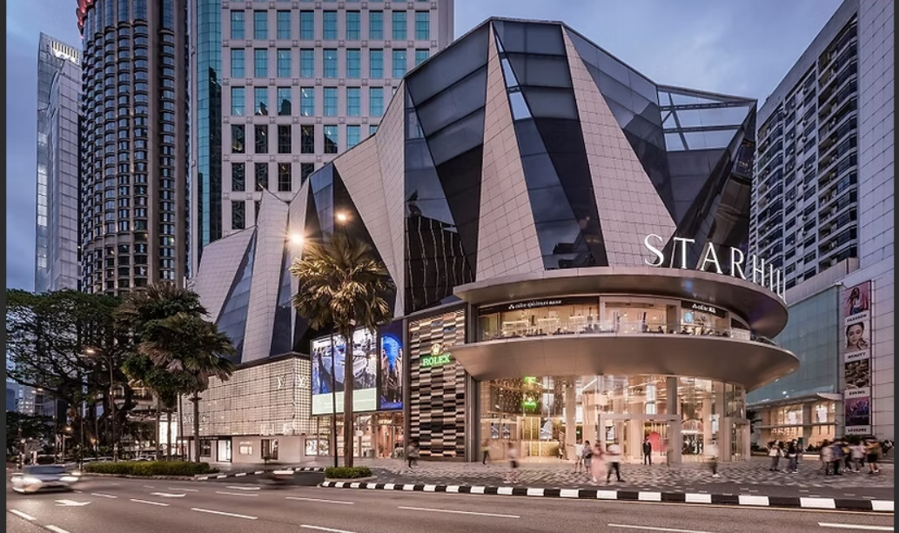

The Furama City Centre occupies an imposing, tiered-roof building constructed in 1984 and surrounded by other commercial structures. Its most remarkable interior space is its vast, three-story lobby with a small shopping mall at the top and a cocktail lounge off to one side. It would be easy to mistake the whole space for a mall, with its escalators, tall columns, and hanging vines. The Tiffany Cafe & Restaurant has a similar '80s-style look, with simple slipcovered chairs and a black, brown, and beige color scheme. The Executive Lounge, a perk of the higher-level rooms, has a swanky look, but is overall fairly plain, with black banquettes and chairs and white round tables. The crowd at the hotel is a mix of tourists and business travelers who are there more for the location than the vibe.
